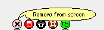
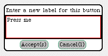

Morphs
Buscar en la parte inferior el tab que dice Supplies hacia arriba, le quedará parecido al dibujo,
 Elija
Button y arrastre fuera del tab.
Elija
Button y arrastre fuera del tab.
Presione Alt click para ver el halo
Cuando
el mouse esté sobre uno de los botones , se desplegará un globo
de ayuda.
como el que se ve en el dibujo
Elija menú y se desplegará el siguiente menú
.
Elegir change label y le saldrá el siguiente morph.

Tipear Grabar parte de pantalla
Así se verá ahora su boton
Vuelva a obtener el halo , seleccione change action selector y tipee dentro del morph de diálogo
GrabScreenAndSaveOnDisk
Nuevamente obtenga el halo y ahora elija el dibujo de la llave de tuercas
(Debug) en el menú desplegable la opcion
Hay dos formas de acceder a los morph para ver su estructura, el Inspector y el Explorer, que se acceden con la opción inspect morph y explore morph respectivamente.
Otro botón útil.
Repetir los pasos anteriores
Tipear: Obtener un directoriio
Así le quedará el botón
Con el halo seleccione debug e inspect morph como antes,
Ahora en target tipee FileList y acepte
Luego en actionSelectpor tipee �#modalFolderSelector
Pruebe los botones para ver su funcionamiento.
Estos morphs puedes ser grabados a traves del comando save morph in file y poesteriormente utilizados cargandolos desde el el FileList con la opción load as morph